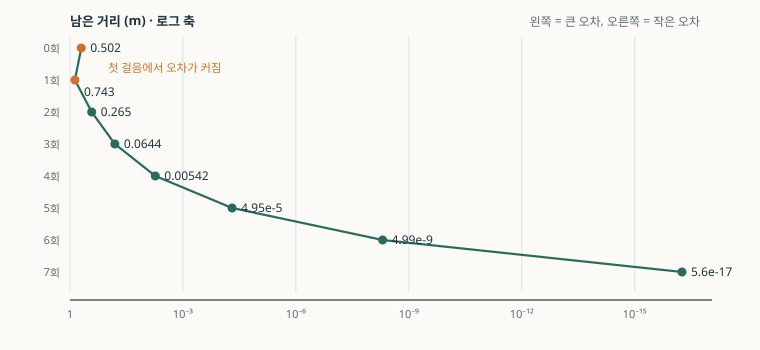

책상 위 컵 손잡이를 잡으려는데 손이 2cm 옆에 있습니다. 정확한 관절각을 한 번에 계산하는 대신, 지금 오차를 보고 조금 고친 뒤 다시 재서 또 고칩니다. 눈을 감고 목표까지 정확한 각도를 외우는 것이 아니라, 한 걸음 내딛고 발밑을 다시 보는 방식입니다. 이번에는 손끝 목표 (0.5, 0.3)m를 고정하고, 출발 자세와 걸음 크기만 바꿔 가며 이 반복이 어떻게 끝나는지 봅니다.
코드 블록을 내 컴퓨터에서 돌리는 방법은 예제 실행하기에 있습니다.
오차를 관절의 작은 수정량으로 바꿉니다

숫자·공식·코드로 이어 보기
순서는 네 단계이고, 매 바퀴에서 1번으로 되돌아옵니다.
- 지금 관절 q로 순기구학을 계산해 손끝 p를 구한다
- 목표 − 현재로 남은 오차 e를 구한다
- J Δq ≈ e를 만족할 작은 관절 수정량 Δq를 구한다
- q에 Δq를 더하고, 오차가 충분히 작아질 때까지 반복한다
3번이 이 방법의 핵심 가정입니다. “지금 위치 근처에서는 야코비안이 거의 그대로”라고 보고, 오차를 한 번에 메우는 걸음을 계산합니다. 실제로는 팔이 움직이면 J도 변하므로 한 번에 맞지 않습니다. 대신 목표에 가까워질수록 가정이 정확해져서 수렴이 빨라집니다.
error = target - fk(q)
if np.linalg.norm(error) < 1e-9:
break
q = q + np.linalg.pinv(jacobian(q)) @ error첫 줄의 error는 벡터입니다. 목표가 오른쪽 1cm면 e = (0.01, 0)m처럼 방향까지 담깁니다. 둘째 줄은 “이미 충분히 가까우면 그만”이라는 정지 조건이고, 1e-9는 m 단위입니다. 셋째 줄에서 pinv는 의사역행렬로, J가 정사각이 아니거나 역행렬이 없을 때도 최소제곱 방식의 수정량을 내주는 도구입니다. 결과 q + ...의 단위는 rad입니다.
직사각 J에서도 SVD로 의사역행렬 J⁺를 계산할 수 있습니다. Jᵀ(JJᵀ)⁻¹이라는 짧은 식은 행들이 독립인 full row rank일 때만 같습니다. SVD에서 0으로 판단한 σ는 역수로 나누지 않고 제외합니다. 만들 수 없는 오차 성분은 잔차로 남고, 0에 가깝지만 남겨 둔 작은σ는 1/σ 때문에 큰수정량을 만들 수 있습니다.
중요한 것은 pinv가 “목표에 반드시 도착하게 해 주는 마법”이 아니라는 점입니다. J는 현재 주변에서만 맞는 지도이고, 걸음이 크면 그 지도 밖으로 나갑니다. 그래서 다음 바퀴에서 순기구학과 J를 새 자세로 다시 계산합니다. 첫 J를 끝까지 붙들고 있으면 안 됩니다. J를 매번 새로 구하는 방법은 앞 차시의 중앙 차분(관절을 ±h 움직여 재기)을 그대로 씁니다.
같은 목표라도 출발 자세에 따라 다른 답에 도착합니다
같은 (0.5, 0.3)m를 향해 두 자세에서 출발해 봅니다. 어깨 90°·팔꿈치 −30°에서 시작하면 7번 고쳐서 어깨 59.5°·팔꿈치 −68.0°에 도착하고, 어깨 0°·팔꿈치 30°에서 시작하면 5번 만에 어깨 2.5°·팔꿈치 68.0°에 도착합니다. 앞 차시에서 코사인 법칙으로 구한 두 답과 각각 같은 자세입니다.
숫자·공식·코드로 이어 보기
| 시작(어깨, 팔꿈치) | 도착한 해 | 업데이트 수 |
|---|---|---|
| (90°, −30°) | (59.5°, −68.0°) | 7 |
| (0°, 30°) | (2.5°, 68.0°) | 5 |
첫 번째 출발에서는 오차가 0.502m에서 0.743m로 오히려 커집니다. 현재의 직선 근사로 너무 크게 걸었기 때문입니다. 그다음부터 0.265, 0.0644, 0.00542m로 줄고, 곧 10−16m 수준까지 내려갑니다.
처음 한 걸음이 나빴다는 사실만으로 “이 방법은 틀렸다”거나 “반복을 무한히 늘리면 해결된다”고 결론 내리면 둘 다 틀립니다. 걸음이 컸던 것이 원인이고, 목표가 닿지 않는 곳이면 반복을 늘려도 소용이 없습니다.
일반적인 수렴 그래프에서 오차 축을 로그로 쓰는 이유도 여기 있습니다. 위 도식은 오차를 가로축에 놓았으므로 같은 가로 간격이 같은 미터 차이가 아니라 같은 비율 차이를 뜻합니다. 표시된 이웃 눈금의 비율은 1000배입니다. 0.1 → 0.01 → 0.001m처럼 자릿수가 줄어드는 모습을 한눈에 보려는 것입니다. 선형 축으로 그리면 마지막 값들이 바닥에 붙어 보이지 않습니다.
6자유도에서는 위치와 방향을 함께 줄이고, 큰 걸음에 벌점을 줍니다
이 예제에서는 손끝의 위치 세 값과 방향 세 값을 출력으로 선택합니다. 관절이 n개이면 그 작업의 J는6×n입니다. 관절 수 자체가 출력 선택을 강제하지 않습니다. 위치 오차는 빼서, 방향 오차는 “지금 자세에서 목표 자세까지 얼마나 더 돌아야 하는가”를 회전 벡터로 적어서 이어 붙입니다.
그러면 오차 e가 여섯 칸이 되고, 앞 세 칸의 단위는 m, 뒤 세 칸은 rad입니다. 단위가 다른 숫자를 한 벡터에 담았으니 가중치를 어떻게 줄지가 이후에 문제가 됩니다.
이때 의사역행렬을 그대로 쓰면 큰 수정량이 나와 손목이 몇 바퀴 감긴 수학적 해로 뛰는 일이 생깁니다. 그래서 큰 걸음에 벌점을 주는 식을 씁니다.
여기서는 e가 위치·방향 오차이고 결과 Δq는 관절각 수정량입니다. 속도 문제에서는 같은 형태의 식에 v를 넣어 q̇를 구합니다. 두 문제의 단위를 섞지 않습니다. 출력 성분을 m개 고르면 I는 m×m입니다. 평면 x·y 문제는 2×2, 이 포즈 문제는 6×6입니다.
이것이 감쇠 최소제곱, DLS입니다. λ는 “오차를 줄이는 일만이 아니라 관절을 너무 많이 바꾸는 것도 싫다”는 정도를 숫자로 적은 것입니다. λ가 커지면 큰 수정량을 더 억제하는 대신 한 걸음의 목표 추종이 약해집니다. λ=0인 위 식은 JJᵀ가 가역일 때 의사역행렬과 같습니다. 정확한 특이점에서는 이 역행렬 식을 그대로 쓸 수 없으며, 의사역행렬은 별도로 계산합니다.
if np.linalg.norm(error) > 0.2:
error *= 0.2 / np.linalg.norm(error)
lam = 0.05 # λ: 감쇠 계수, 관절의 물리적 속도 제한이 아님
m = J.shape[0]
dq = J.T @ np.linalg.solve(J @ J.T + lam**2*np.eye(m), error)
q += dq여기서 자주 틀리는 부분을 분명히 합니다. 걸음 제한 0.2는 포즈 오차 벡터 e의 크기를 0.2로 줄이는 장치입니다. 관절 수정량 Δq를 0.2rad 이하로 자른 것이 아닙니다. e를 줄여 놓으면 그 오차에서 계산되는 Δq도 자연히 작아지지만, 제한이 걸린 대상은 e입니다. solve(A, e)는 A·x = e를 푸는 함수로, 역행렬을 직접 만들 필요가 없습니다.
교안의 비교가 이 차이를 잘 보여 줍니다. λ = 0.01에 걸음 제한을 두지 않으면 [−330, 765, −2100, 1260, −405, −3060]°처럼 여러 바퀴 감긴 해를 찾습니다.
손끝 오차는 0이지만 실제 로봇은 케이블도 관절도 그런 회전을 견디지 못합니다. λ = 0.05에 걸음 제한을 두면 [30, 45, 60, 0, 45, 0]°로 접근하고, 시작 위치 오차 588.692mm가 12회에 0.028mm까지 줄어듭니다.
실습 답을 하나씩 확인합니다
먼저 목표 세 개의 해 개수입니다. 앞 차시의 코사인 법칙으로 직접 판정한 값입니다.
숫자·공식·코드로 이어 보기
목표 세 개의 해 개수와 각도
- (0.3, 0.4)m: 거리 0.5m이므로 2개. 약 (90°, −90°)와 (16.26°, 90°).
- (0, 0.7)m: 완전히 편 경계이므로 1개. (90°, 0°).
- (0, 0.05)m: 안쪽 구멍이라 0개.
관절 한계를 넣지 않은 결과입니다. 부동소수점 때문에 0°가 1.5×10−6°처럼 아주 작은 수로 표시될 수 있습니다.
새 시작점에서 수치 IK는 어디로 가나요?
b15_ik_newton2.py를 목표 (0.5, 0.3)m, 최대 8회, 정지 기준 10−9m로 돌린 값입니다.
- 시작 (45°, 45°) → (2.4773°, 67.9757°), 업데이트 5회.
- 시작 (60°, −20°) → (59.4502°, −67.9757°), 업데이트 6회.
두 번째는 처음 0.249m였던 오차가 약 0.444m로 커졌다가 줄어듭니다. 출력된 줄 수와 실제 업데이트 횟수는 다를 수 있고, 0회째는 아직 움직이지 않은 상태입니다.
쭉 편 팔의 손끝 x속도는?
(0°, 0°)의 J 첫 행은 [0, 0]이므로 어떤 유한한 관절 속도를 넣어도 그 순간의 x속도는 0입니다. 교안의 q̇ = (0.5, −0.2)rad/s라면 y속도는 0.7×0.5 − 0.3×0.2 = 0.29m/s입니다. 시간이 지나 팔이 굽으면 x위치가 변할 수 있다는 사실과는 다른 이야기입니다.
어느 해를 찾을지 정하는 것은 무엇인가
같은 목표에 팔꿈치 위·아래 두 해가 있을 때, 수치 IK가 어느 쪽을 찾는지 결정하는 것은 목표 위치, 시작 자세, 최대 반복 횟수, 수치미분 h 중 무엇일까요.
숫자·공식·코드로 이어 보기
정답과 이유
시작 자세입니다. 수렴 경로를 바꾸고, 그 경로가 끝나는 골짜기가 답이 됩니다. 반복 횟수는 계산을 얼마나 오래 시도할지, h는 기울기를 어떻게 잴지에 관한 값입니다. 실제 알고리즘에서는 관절 한계와 걸음 선택도 결과에 영향을 줍니다. 이 질문은 p.24에서 나머지 조건을 같게 놓고 시작점만 바꾼 실험을 가리킵니다.
세 도구를 한 줄로 연결합니다
간단한 2링크는 공식으로 후보를 모두 찾을 수 있고, 일반적인 팔은 이 반복이 유용합니다. 어느 쪽이든 나온 관절값을 순기구학에 넣어 목표 오차를 확인하고, 관절 한계를 넘지 않는지 따로 검사해야 합니다.
숫자·공식·코드로 이어 보기
- 순기구학: 지금 관절값에서 현재 손끝을 구한다.
- 야코비안: 지금 주변에서 관절을 조금 바꿀 때 손끝 변화가 어떻게 생기는지 알려 준다.
- 수치 역기구학: 목표와의 차이를 J로 작은 관절 수정량으로 바꾸고 반복한다.
내 컴퓨터에서 돌려 보기
아래 출력은 이 컴퓨터(MuJoCo 3.17.0)에서 오너의 예제를 직접 돌려 얻은 값입니다. 명령은 줄 두 개(폴더로 이동 + 실행)이고 예제 실행하기에 이유가 있습니다. 그림 파일을 저장하는 예제는 예제 폴더에 PNG가 생기지 않도록 임시 폴더(cd $env:TEMP)에서 전체 경로로 돌립니다.
b15_ik_newton2.py · 반복해서 푸는 역기구학 — 이 수업의 두 시작점
cd C:\code\src\robo\vol3\03-kinematics
..\..\.venv\Scripts\python.exe b15_ik_newton2.py시작 (어깨, 팔꿈치) = (45.0, 45.0)도
0회: 남은 거리 3.57e-01m
1회: 남은 거리 1.97e-01m
2회: 남은 거리 4.49e-02m
3회: 남은 거리 2.50e-03m
4회: 남은 거리 1.23e-05m
5회: 남은 거리 2.43e-10m
→ 어깨 2.5도, 팔꿈치 68.0도
시작 (어깨, 팔꿈치) = (60.0, -20.0)도
0회: 남은 거리 2.49e-01m
1회: 남은 거리 4.44e-01m
2회: 남은 거리 6.49e-02m
3회: 남은 거리 6.85e-03m
4회: 남은 거리 6.96e-05m
5회: 남은 거리 9.95e-09m
6회: 남은 거리 1.24e-16m
→ 어깨 59.5도, 팔꿈치 -68.0도읽을 곳: 5행의 목표를 np.array([0.5, 0.3])로 바꾼 결과입니다(파일에는 0.4가 들어 있음). 12~16행이 한 바퀴: 오차를 재고(12행), 충분히 작으면 멈추고(14행), 아니면 pinv(야코비안2(q)) @ 오차만큼 관절을 고칩니다(16행). 두 번째 시작점 (60°, −20°)은 오차가 0.249에서 0.444로 커졌다가 줄어듭니다.
b15_ik_newton2.py · 교안의 시작점 (90°, −30°)와 (0°, 30°)
cd C:\code\src\robo\vol3\03-kinematics
..\..\.venv\Scripts\python.exe b15_ik_newton2.py시작 (어깨, 팔꿈치) = (90.0, -30.0)도
0회: 남은 거리 5.02e-01m
1회: 남은 거리 7.43e-01m
2회: 남은 거리 2.65e-01m
3회: 남은 거리 6.44e-02m
4회: 남은 거리 5.42e-03m
5회: 남은 거리 4.95e-05m
6회: 남은 거리 4.99e-09m
7회: 남은 거리 5.55e-17m
→ 어깨 59.5도, 팔꿈치 -68.0도
시작 (어깨, 팔꿈치) = (0.0, 30.0)도
0회: 남은 거리 2.19e-01m
1회: 남은 거리 1.77e-01m
2회: 남은 거리 2.27e-02m
3회: 남은 거리 9.22e-04m
4회: 남은 거리 1.43e-06m
5회: 남은 거리 4.24e-12m
→ 어깨 2.5도, 팔꿈치 68.0도읽을 곳: 7~8행에서 두 for 줄 중 7행의 주석을 풀고 8행을 주석 처리한 결과입니다(목표는 0.5, 0.3). 0.502 → 0.743 → 0.265 → 0.0644 → 0.00542로 이 수업 표와 같습니다.
b15_ik_newton2.py · 파일에 들어 있는 그대로
cd C:\code\src\robo\vol3\03-kinematics
..\..\.venv\Scripts\python.exe b15_ik_newton2.py시작 (어깨, 팔꿈치) = (45.0, 45.0)도
0회: 남은 거리 3.06e-01m
1회: 남은 거리 2.11e-01m
2회: 남은 거리 5.74e-02m
3회: 남은 거리 3.63e-03m
4회: 남은 거리 2.09e-05m
5회: 남은 거리 5.48e-10m
→ 어깨 -0.0도, 팔꿈치 90.0도
시작 (어깨, 팔꿈치) = (60.0, -20.0)도
0회: 남은 거리 2.41e-01m읽을 곳: 목표가 (0.4, 0.3)이어서 도착 자세가 (0°, 90°)로 바뀝니다. 이 수업의 목표 (0.5, 0.3)과 다른 조건이니 값을 섞어 읽지 마세요.
b16_ik6.py · 6관절: 걸음 제한과 감쇠
cd C:\code\src\robo\vol3\03-kinematics
..\..\.venv\Scripts\python.exe b16_ik6.py(가) 걸음 제한 없음, λ = 0.01
찾은 관절 각도(도): [ -330. 765. -2100. 1260. -405. -3060.]
-180~180도로 정리: [ 30. 45. 60. -180. -45. 180.]
남은 오차: 위치 0.000000mm, 자세 0.000000도
(나) 걸음 0.2로 제한, λ = 0.05
0회: 위치 오차 588.692mm, 자세 오차 95.732도
4회: 위치 오차 332.099mm, 자세 오차 52.193도
8회: 위치 오차 60.816mm, 자세 오차 9.279도
12회: 위치 오차 0.028mm, 자세 오차 0.000도
16회: 위치 오차 0.000mm, 자세 오차 0.000도
17회: 위치 오차 0.000mm, 자세 오차 0.000도
찾은 관절 각도(도): [30. 45. 60. 0. 45. 0.]읽을 곳: 19~32행이 함수 하나에 걸음 제한(29~30행)과 감쇠 최소제곱 한 걸음(32행)을 담고, 36~44행이 (가) 제한 없음과 (나) 제한 0.2를 출력합니다. (가)는 [−330, 765, …]°처럼 여러 바퀴 돈 답을 줍니다.
선택 · 배운 뒤 스스로 확인
한 걸음의 부호와, 오차가 커졌을 때의 판단
여기까지 읽은 뒤에 확인해 보세요. 첫 문제는 한 방향만 움직이는 단순한 비율로 같은 나눗셈을 연습하고, 둘째 문제는 첫 걸음에서 오차가 커진 상황을 어떻게 읽을지 묻습니다. 두 번째 문제는 계산이 아니라 판단의 문제입니다.
연습 두 문제 펼치기
부호가 헷갈리면 목표−현재를 종이에 적고, 뒤로 가야 하는지 앞으로 가야 하는지 먼저 말해 보세요.
수업 근거 / 원문 보기
강의 교안 PDF p.23~28(반복 순서, 시작 자세에 따른 해, DLS와 걸음 제한, 실습 답)과 교과서 3.6절을 하나의 설명으로 합쳤습니다. 교과서의 “안개 속에서 발밑 경사만 보고 내려가기” 비유와 λ 선택에 대한 답은 본문에 흡수했고, 출처를 나란히 비교하는 문단은 두지 않았습니다.
- 교과서 캐시: PDF 파일 123쪽 · PDF 파일 127쪽 · 3장 원고 전체
- 수치 구분: 0.502 → 0.743 → 0.265 → 0.0644 → 0.00542m, 도착 자세와 업데이트 수, 새 시작점 두 개의 결과(2.4773°·59.4502° 등), DLS 두 경우의 각도·오차는 오너의
b15_ik_newton2.py와b16_ik6.py를 이 컴퓨터에서 돌려 확인했습니다. 교안의 값과 같습니다. 주의: b15 파일의 목표는 지금 (0.4, 0.3)이어서, 이 수업의 값을 얻으려면 5행을 (0.5, 0.3)으로 바꿔야 합니다. - 도해:
assets/eli5-day2-error-ladder.svg— 교안 p.24의 남은 거리 값을 로그 축에 옮긴 새 도식입니다. 계산을 새로 실행한 그래프가 아닙니다. - Modern Robotics 5.3: Singularities — 작업별 J의 랭크와 여유 자유도.
- Modern Robotics 5.4: Manipulability — 관절 속도 원, 속도 타원의 주축·반축.
- Buss, Introduction to Inverse Kinematics, p.9–11 — SVD 의사역행렬과 감쇠 최소제곱.